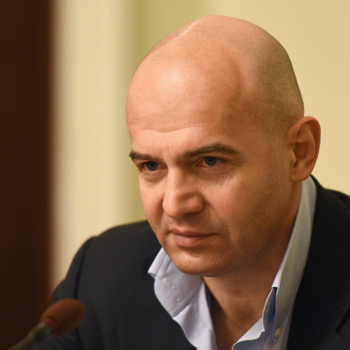

Igor Kononenko
Ігор Кононенко

Український бізнесмен і філантроп.
Ігор Віталійович Кононенко – український бізнесмен, меценат, у минулому політичний діяч, народний депутат VIII скликання Верховної Ради України, перший заступник голови фракції партії «Блок Петра Порошенка» (2014-2019).
Читати далі